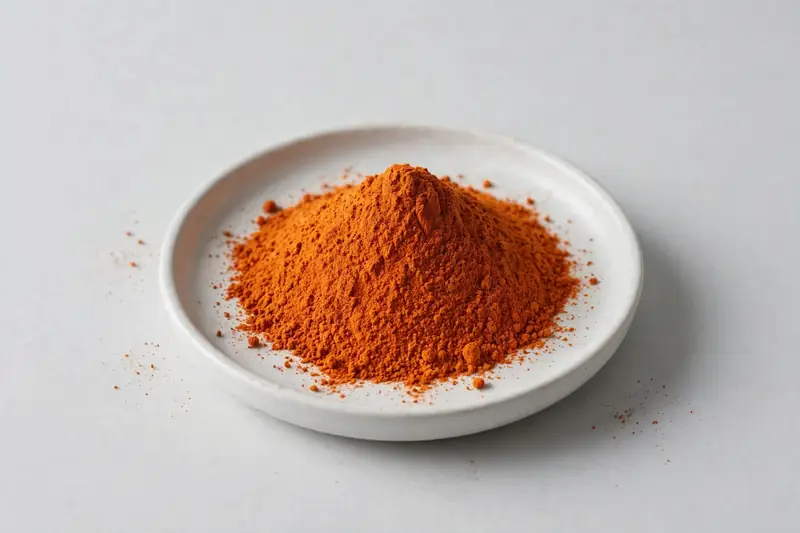

Marigold-derived lutein with zeaxanthin as a co-marker, positioned for eye-health formulations.

Overview
Lutein powder is a carotenoid extracted from Tagetes erecta marigold, typically supplied with zeaxanthin as a naturally occurring co-marker. It anchors most eye-health ranges across supplement and functional food formats. As a Xi'an-based trading company, we source through vetted partner producers and confirm honestly what a given lutein or zeaxanthin specification can realistically support.
Specifications below reflect commonly requested options in the market — not a stock list. Share your target spec and we'll confirm exactly what we can supply, honestly.
| Specification | Details |
|---|---|
| Botanical identity | Tagetes erecta (marigold), flower oleoresin-derived lutein |
| Marker compound | Lutein — commonly requested: 5-20% (HPLC); zeaxanthin often reported as a co-marker |
| Appearance | Fine powder, color typical of the extract |
| Mesh size | Typically 80–100 mesh (confirm per inquiry) |
| Testing | COA/TDS arranged on request; scope agreed per your spec |
Applications
Documentation
We don't claim in-house labs or certifications we don't hold. COA and TDS documents can be arranged on request, and testing scope is agreed against your specification before supply.
FAQ
Related products
Polygonum cuspidatum
Key marker: Trans-Resveratrol
View specs →Vitex agnus-castus
Key marker: Agnuside
View specs →Epimedium sagittatum
Key marker: Icariin
View specs →Punica granatum
Key marker: Punicalagins
View specs →Garcinia mangostana
Key marker: Xanthones
View specs →Send your target spec and volumes — we'll respond with a tailored quotation.
Request a Quote